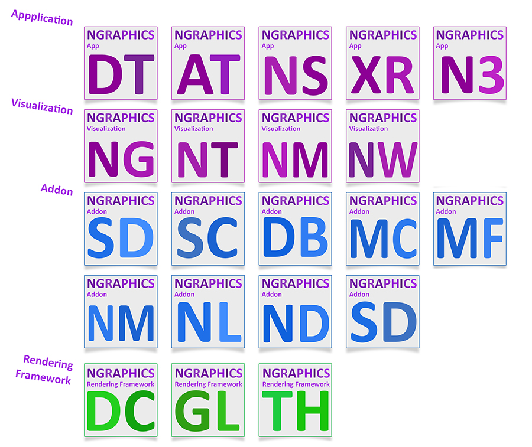

NGraphics Mapping Suite
Position : Product Engineer, Research, and Software Development Engineer at
esri
Application
* Drawing tool
* Annotation
* NSketch
* XR
* N3
* NGlobe
* NTerrain
* NMedia
* NWallpaper
Addon
* Smart Drawing
* Smart Commander
* Drawing Block
* Matpicon
* Mapfilter
* NMedia
* Nearning
* NData
* Rhino3d Grasshopper addons
Rendering Framework
* Dynamic Canvas
* NWebGL
* ThreeJS
NJSCore
* Geometry libs
* NWebGL libs
* ThreeJS Wrapper
* ML Wrapper
* CV libs
* IO libs
* NData libs
* NColor libs
* Utility libs
* Others
- Javascript, HTML, CSS, Typescript, C#, C
- ThreeJS, TensorFlow.JS, NJS
- WebGL, Canvas